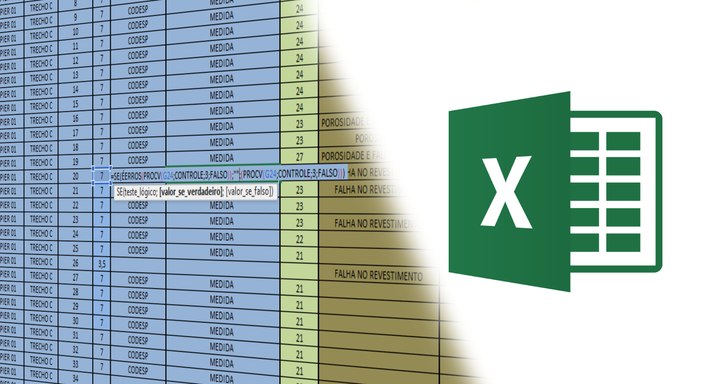
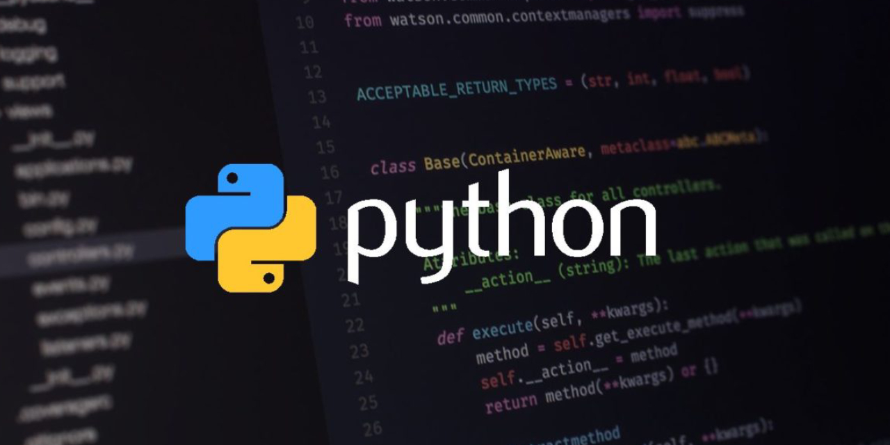
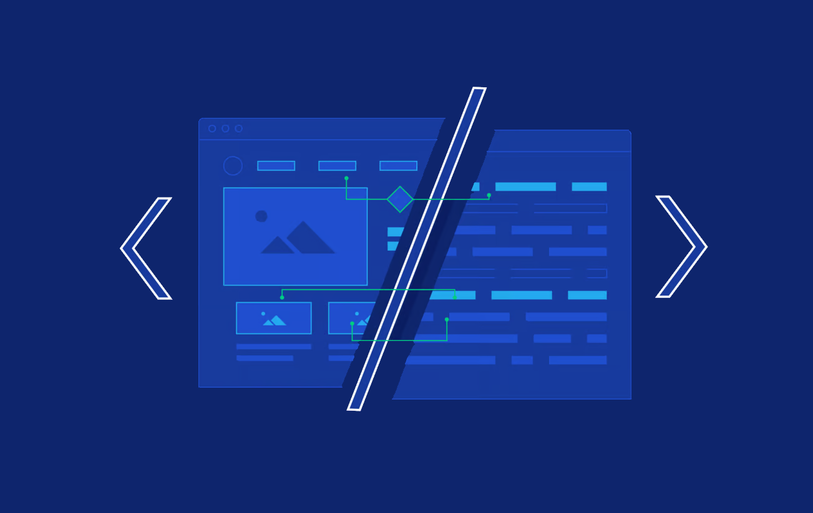

O primeiro contato
Março de 2016

O primeiro contato com lógica, não necessáriamente lógica de programação, foi nas dezenas de planilhas que eu comecei a fazer para os controles de execuções dos serviços em obra e também para facilitar os estudos na faculdade de engenharia civil com os famosos SES, PROCV e afins.
Python | Os primeiros passos na programação
Novembro de 2018

Após tempos trabalhando com excel, e aprimorando cada vez mais, me deparei com a linguagem tão falado... Python! Isso atravez do canal do Gustavo Guanabara, o Curso em vídeo. Foi ai que comecei a estudar e praticar, achando tranquilo, porém aquilo não me prendeu e acabei com o tempo deixando de lado.
Front-End | A descoberta de um leque na programação
Janeiro de 2023

Depois de um grande hiato sobre assunto, decidi voltar a ver programação e pesquisar mais sobre o mercado de trabalho, foi ai que vi que a programação abrindo um leque e nele o desenvolvimento Front-End, foi ai que decidir seguir nesse caminho, pois sou uma pessoa muito visual e todo meu background de fotografia e edição de foto e vídeo poderiam deixar as coisas um pouco mais dinâmicas.
Escolha por uma graduação
Fevereiro de 2023
Decidi iniciar uma graduação em Desenvolvimento e Analise de Sistemas para conseguir ter um conhecimento um pouco mais amplo na área, hoje me encontro no terceiro semestre do curso, porém não deixei de estudar Front-End de forma independente.